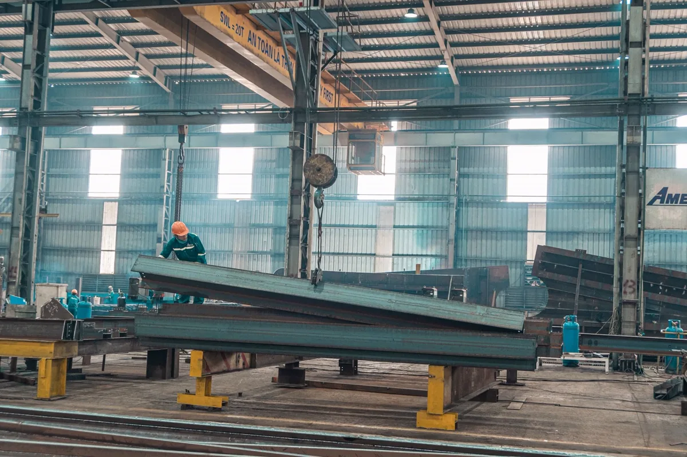
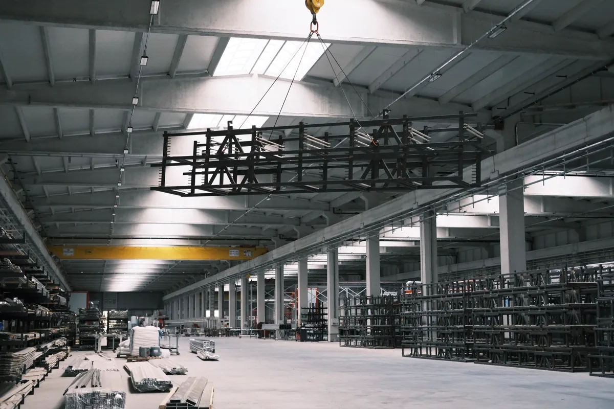

Montagem é onde o projeto encontra a realidade
Boa parte dos problemas que aparecem depois em uma planta nasce na montagem: chumbador fora de posição, base sem planicidade, estrutura sem contraventamento provisório, solda de campo sem procedimento qualificado, equipamento alinhado "no olho".
Nosso trabalho é fechar essa lacuna. Executamos montagem com plano de montagem escrito, controle dimensional registrado, torque de conexão parafusada controlado e ensaios não destrutivos nas juntas críticas. O que foi montado fica documentado, junta por junta.
Atendemos plantas em Vitória, Vila Velha, Serra, Cariacica e Viana, além dos polos de Aracruz, Anchieta e Linhares.
O que montamos
Estruturas metálicas
Galpões, coberturas, mezaninos, passarelas, escadas e plataformas de acesso, torres de apoio e suportes de equipamento. Montagem conforme projeto — o dimensionamento e o detalhamento de ligações estão descritos em projeto estrutural. Quando o escopo é a obra inteira, veja construção de galpões e quadras.
Pipe racks e tubulação industrial
Montagem do rack, dos suportes, dos berços e da tubulação de processo e de utilidades, com atenção a dilatação térmica, ponto fixo, guia e apoio deslizante. Tubulação que entra no escopo da NR-13 recebe tratamento próprio de inspeção e documentação.
Bases mecânicas e instalação de equipamento
Execução da base, gabarito e posicionamento de chumbadores, grouteamento, nivelamento, alinhamento de acoplamento e verificação de pé-de-galinha (soft foot). É o serviço que determina se a bomba, o compressor ou o ventilador vão durar — ou vibrar até quebrar.
Instalações industriais
Redes de ar comprimido, vapor, água gelada e condensado, suportação, isolamento térmico e interligação com utilidades. Sistemas de exaustão e de resfriamento têm página própria em exaustão, coifas e torre de resfriamento.
Desmontagem, relocação e retrofit
Transferência de linha de produção, remoção de estrutura obsoleta e substituição pontual de peça deteriorada. Antes da desmontagem, levantamento cadastral e marcação de peças — o que evita a montagem virar quebra-cabeça no destino.

Como conduzimos a obra
Planejamento e rigging
Plano de montagem, sequência de içamento, definição de guindaste e pontos de içamento, isolamento de área e análise preliminar de risco.
Recebimento e conferência
Conferência dimensional e documental das peças fabricadas, verificação de furação, esquadro e certificado de material antes de subir qualquer coisa.
Montagem controlada
Montagem com contraventamento provisório, prumo e nível registrados, torque controlado em conexões parafusadas e soldagem por procedimento qualificado.
Inspeção e as-built
Inspeção visual e ensaios não destrutivos, relatório dimensional, data book de montagem, as-built e ART de execução registrada no CREA-ES.

Controle de qualidade da montagem
| Item | Verificação | Registro |
|---|---|---|
| Peças fabricadas | Dimensional, furação, esquadro, certificado de material | Lista de conferência assinada |
| Chumbadores | Posição por gabarito, cota, projeção e verticalidade | Relatório topográfico ou dimensional |
| Base de equipamento | Planicidade, resistência do grout, ausência de vazio sob a placa | Relatório de grouteamento |
| Conexões parafusadas | Aperto e torque conforme especificação | Planilha de torque por conexão |
| Soldas de campo | Procedimento qualificado, soldador qualificado, END conforme plano | Relatório por junta |
| Estrutura montada | Prumo, nível, alinhamento e contraventamento definitivo | Relatório dimensional final |
| Equipamento rotativo | Alinhamento de acoplamento, soft foot, folga | Relatório de alinhamento |
| Proteção anticorrosiva | Retoque de pintura em solda e região danificada | Medição de espessura de película |

Segurança na frente de montagem
Montagem industrial concentra os riscos mais graves de uma obra: queda de altura, queda de material, esmagamento em içamento e acidente com máquina. Trabalhamos com NR-18 no canteiro, NR-35 para trabalho em altura, NR-11 para movimentação de carga, NR-10 quando há energia elétrica envolvida e NR-12 nas máquinas — escopo detalhado em adequação de máquinas à NR-12.
Área isolada, permissão de trabalho emitida, análise preliminar de risco discutida com a equipe antes de cada frente e linha de vida definida em projeto, não improvisada no telhado.
Perguntas frequentes sobre montagem industrial
O que é uma base mecânica e por que ela derruba tanta máquina?
Base mecânica é o bloco de concreto e o conjunto de chumbadores que sustentam e alinham um equipamento rotativo — bomba, compressor, ventilador, redutor, motor. Ela precisa ter massa suficiente para absorver vibração, superfície plana dentro de tolerância apertada e chumbadores posicionados com gabarito. Quando a base é mal executada, o equipamento entra em pé-de-galinha, o alinhamento não fecha, o acoplamento e o rolamento se desgastam rápido e a máquina volta para a manutenção em poucos meses. É um custo baixo na obra que vira um custo alto na operação.
Vocês fazem só a montagem ou também a fabricação?
Trabalhamos das duas formas. Podemos assumir o pacote completo — projeto, fabricação em oficina, transporte e montagem — ou apenas a montagem de estrutura fabricada por terceiro. No segundo caso, fazemos primeiro a conferência dimensional e documental do que chegou: peça fora de esquadro ou com furação deslocada é problema muito mais barato de resolver no pátio do que a trinta metros de altura.
Como é feito o controle de qualidade das soldas de montagem?
Por procedimento de soldagem qualificado, soldador qualificado para aquele procedimento e ensaio conforme o plano de inspeção: inspeção visual em cem por cento das juntas e ensaios não destrutivos por amostragem ou totalidade nas juntas críticas — líquido penetrante, partículas magnéticas, ultrassom ou radiografia, conforme o caso. O resultado vira relatório rastreável por junta, não uma declaração genérica de que a solda está boa.
Dá para montar sem parar a produção?
Na maioria dos casos sim, com planejamento. Trabalhamos com janela de parada negociada, montagem em turno noturno ou fim de semana, pré-montagem no solo para reduzir o tempo de içamento e isolamento da área de risco. O que define é a interferência entre o caminho de içamento e a área em operação — por isso o plano de rigging é feito antes, não no dia.
Montagem industrial precisa de ART?
Sim. Montagem de estrutura metálica, de equipamento e de tubulação industrial é atividade técnica com ART de execução registrada no CREA-ES. Além dela, a obra exige as documentações de segurança do trabalho aplicáveis — NR-18 para o canteiro, NR-35 para trabalho em altura, NR-12 para as máquinas envolvidas e NR-34 quando o ambiente exigir.
Montagem industrial na Grande Vitória
Frentes de montagem em plantas industriais, centros de distribuição e obras comerciais:
Tem uma frente de montagem para executar?
Mande o escopo, o prazo e se há janela de parada. Retornamos com plano de montagem e proposta.